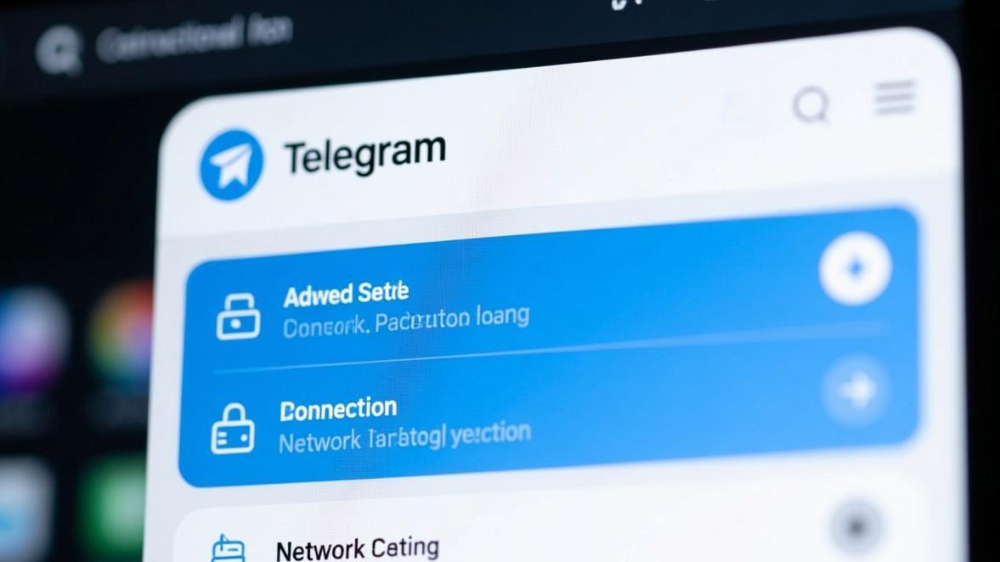

上个月我在公司用Telegram电脑版（就是Windows上那个Telegram Desktop），想看看前一天同事发的一张截图，结果一点开，图片位置是个灰色的裂图图标。我当时以为是网络问题，等了一会还是那样。然后我又试了别的聊天窗口，发现有些聊天里的图片能正常显示，有些就不行——而且好像是最近几天的图片容易出问题。
我一开始以为是公司网络的问题（公司在国外，但有些网站还是访问不了），后来我拿手机试了一下，手机上的Telegram能正常显示那些图片，那就说明不是网络的问题，是我电脑上的Telegram有问题。

折腾了一晚上，把能试的方法都试了，终于搞定了。现在我把Windows和Mac上都可能出现的问题和对应的解决方法都写下来，你要是也在电脑上用Telegram遇到图片加载不出来的问题，对着试一下应该就能搞定。
先确认一下你的问题是哪种
电脑版Telegram图片加载不出来，和手机版不太一样——电脑版的问题通常更「硬核」一点，涉及到代理设置、缓存路径、防火墙这些。在开始折腾之前，先看看你的情况是哪种：
1. 所有图片都加载不出来（不管是谁发的、什么时候发的） 2. 只有某些聊天里的图片加载不出来（比如只有群里的不行，私聊的就能行） 3. 图片能显示缩略图，但点开大图就加载不出来 4. 图片显示裂图或者灰色方块 5. 图片加载到一半就停了（进度条卡住）
我遇到的是第2种和第4种——有些聊天里的图片能正常显示，有些就不行；而且那些不行的会显示裂图。下面的方法我都会注明是针对哪种情况的，你可以跳着看。
Windows用户必看：代理设置是个大坑
如果你在Windows上用Telegram，而且你是通过代理上网的（就是用了某些网络工具），那代理设置可能是导致图片加载不出来的主要原因。
Telegram电脑版有个很坑的地方：它不会自动使用系统的代理设置。也就是说，即使你在Windows里设置了代理，Telegram可能还是不走那个代理，结果就是文字消息能收发（因为走的是Telegram自己的连接），但图片加载不出来（因为图片下载需要走代理）。
我刚开始就是这个问题——我在Windows里设置了代理，浏览器能正常访问国外网站，但Telegram就是加载不出图片。后来我发现Telegram里有个单独的代理设置，要在里面设置才能生效。
步骤 1
打开Telegram Desktop，点左上角的三条横线菜单
步骤 2
找到「设置」（Settings）->「高级」（Advanced）
步骤 3
往下滑，找到「连接类型」（Connection type）或者「代理设置」（Proxy settings）
步骤 4
如果你的网络需要代理，在这里添加你的代理配置（通常是SOCKS5或者HTTP代理）
步骤 5
填完之后点「测试」（Test），看看能不能连上
步骤 6
如果能连上，保存设置，然后重启Telegram试试能不能加载图片
说个我踩过的坑：
我第一次设置代理的时候，填的是我那个网络工具的HTTP代理（就是127.0.0.1:xxxx那种），结果填完之后Telegram连消息都收不到了。后来我发现是因为那个HTTP代理不支持Telegram的协议，要改用SOCKS5代理才行。如果你的网络工具支持SOCKS5，优先用SOCKS5；如果不支持，可以试试用第三方工具把SOCKS5转成HTTP（比如用v2rayN或者Clash的这些工具，它们通常能同时提供SOCKS5和HTTP代理）。
Mac用户注意：防火墙和「Little Snitch」
Mac用户如果遇到图片加载不出来的问题，除了代理设置之外，还要检查一下防火墙或者第三方网络监控工具。
Mac系统自带有防火墙（在「系统偏好设置 -> 安全性与隐私 -> 防火墙」里），如果你把防火墙打开了，而且设置了「阻止所有传入连接」，那Telegram可能就没法正常下载图片了。你可以去防火墙设置里把Telegram设为允许。
另外一个Mac用户容易遇到的问题，就是装了「Little Snitch」这种第三方网络监控工具。这个工具会监控所有应用网络访问，如果你不小心把Telegram的网络访问给拒绝了，那图片肯定加载不出来。你可以打开Little Snitch的配置界面，看看有没有关于Telegram的拒绝规则，有的话删掉或者改成允许。
步骤 1
打开「系统偏好设置」，找到「安全性与隐私」
步骤 2
点上面的「防火墙」标签，看看防火墙是不是打开了
步骤 3
如果打开了，点「防火墙选项」，看看Telegram是不是在拒绝列表里
步骤 4
如果Telegram在拒绝列表里，选中它，点下面的「-」号删掉，或者改成「允许传入连接」
步骤 5
如果你装了Little Snitch，打开它的配置界面，找到Telegram相关的规则，确保是允许状态
方法二：清除Telegram电脑版的缓存
和手机版一样，电脑版的Telegram也会缓存图片和视频。如果缓存数据损坏了，就会导致图片显示裂图或者加载不出来。
不过电脑版清除缓存的方法和手机版不太一样，而且Windows和Mac的缓存位置也不一样。我来分别说一下。
Windows清除缓存的方法
步骤 1
先完全关闭Telegram（右键任务栏的Telegram图标，选「退出」）
步骤 2
按Win+R，打开「运行」对话框
步骤 3
输入 %appdata%\Telegram Desktop ，然后回车
步骤 4
你会看到一个叫「tdata」的文件夹，这个就是Telegram的数据目录
步骤 5
进去之后，找到那些名字是一串数字和字母的文件夹（这些就是缓存），可以全部删掉
步骤 6
或者更简单的方法：在Telegram的设置里，找到「高级」->「清理缓存」，直接点清理
步骤 7
清理完重新打开Telegram，看看图片能不能加载
重要提醒：
如果你用手动删文件夹的方法，注意不要删掉「tdata」文件夹本身，也不要删掉里面那些名字是「D877F783D5D3EF8C」之类的文件（这些是你的账号登录信息）。只删那些缓存文件夹就好了。如果不确定，就用Telegram设置里的「清理缓存」功能，那个比较安全。
Mac清除缓存的方法
步骤 1
先完全关闭Telegram（右键Dock上的Telegram图标，选「退出」）
步骤 2
打开「访达」（Finder），按Shift+Command+G
步骤 3
输入 ~/Library/Application Support/Telegram Desktop ，然后回车
步骤 4
和Windows一样，你会看到一个「tdata」文件夹
步骤 5
进去把缓存文件夹删掉，或者用Telegram设置里的「清理缓存」功能
步骤 6
清理完重新打开Telegram
方法三：检查一下Telegram的「自动下载」设置
Telegram电脑版有个「自动下载媒体」的设置，如果这个被关掉了，那图片就不会自动加载，你要手动点才能下载。如果你发现图片都是点击之后才显示（或者显示个下载按钮），那可能就是这个设置被关掉了。
而且这个设置还分「私聊」、「群聊」、「频道」，你可以分别设置。有时候是私聊的自动下载开着，但群聊的被关掉了，结果就是私聊里的图片能正常显示，群里的就不行。我遇到过这种情况，就是在公司电脑上，有人把群聊的自动下载关掉了（可能是为了省流量或者存储空间），结果我以为是出了问题，折腾了半天。
步骤 1
打开Telegram，进入「设置」->「高级」->「自动下载媒体」
步骤 2
你会看到「私聊」、「群聊」、「频道」三个选项
步骤 3
把这三个都打开（或者至少把你需要的部分打开）
步骤 4
你还可以设置自动下载的文件大小限制，比如只自动下载小于50MB的文件
步骤 5
设置完之后，回到聊天窗口，看看图片能不能自动加载
方法四：Windows专属——检查一下hosts文件
这个是比较冷门的原因，但我确实遇到过一次。有些网络工具会修改Windows的hosts文件（这个文件用来把域名映射到IP地址），如果hosts文件里关于Telegram的配置有问题，就会导致Telegram能连上但加载不出图片。
hosts文件在 C:\Windows\System32\drivers\etc\hosts ，你需要用管理员权限打开记事本，然后从记事本里打开这个文件（因为直接双击打开没有管理员权限，保存不了）。
打开之后，看看里面有没有关于telegram或者telegram.org的配置，如果有的话，把那些行删掉（或者前面加个#号注释掉），然后保存。重启Telegram试试。
说个提醒：
修改hosts文件之前最好先备份一下。你可以把原来的hosts文件复制一份，存到别的地方，万一改出问题了还能恢复。而且如果你不太懂hosts文件是干嘛的，建议先搜一下相关教程，或者直接试别的方法，不要随便改hosts文件。
方法五：实在不行就重装吧
如果上面所有方法都试了还是不行，那就只能卸载重装了。和手机版一样，这是最有效但最麻烦的一个方法。
Windows用户可以在「设置 -> 应用 -> 应用和功能」里找到Telegram Desktop，点「卸载」。Mac用户可以直接把Telegram拖到废纸篓里。
卸载完之后，建议去Telegram官方下载页面重新下载最新版的Telegram Desktop，不要用那些修改版或者老版本。装完之后登录你的账号，看看图片能不能正常加载。
我同事的电脑就是重装才好的。他那个情况是Telegram能收消息但所有图片都加载不出来，试了所有方法都不行，最后重装就好了。我猜可能是Telegram的某个核心文件损坏了，但这种情况比较少见。
我总结的几个预防方法
把我自己电脑上的问题搞定之后，我总结了几个预防方法，特别是针对电脑版Telegram的：
第一，尽量用最新版的Telegram Desktop。Telegram的更新比较频繁，而且每次更新都会修一些bug，老版本容易出问题。我是每隔一两周就检查一下有没有更新（Telegram会自动提示更新，但你也可以手动去「设置 -> 关于」里看看）。
第二，如果你用代理，定期检查一下代理设置是不是还有效。有时候代理工具更新了或者配置变了，Telegram里的代理设置就可能失效，导致图片加载不出来。我一般每个月检查一次，确保代理还能正常工作。
第三，定期清理一下Telegram的缓存。电脑版Telegram的缓存能变得很大——我同事的电脑上Telegram缓存有十几个G（他加了很多图多的群），清完之后不但图片加载正常了，还腾出了不少存储空间。
第四，如果你在公司电脑上用Telegram，注意一下公司的IT策略。有些公司会在防火墙或者杀毒软件里限制某些应用的网络访问，如果你的公司有这样的限制，可能需要找IT部门帮忙解决。
关于媒体加载的更多优化方法，可以看看媒体加载优化分类里的文章，里面有一些提升Telegram媒体加载速度的技巧。
常见问题
好了，关于Telegram电脑版图片加载不出来的问题，我能想到的所有解决方法都写在这里了。电脑版的问题通常比手机版复杂一点，因为涉及到系统设置、代理配置、防火墙这些，但只要你按顺序试，基本都能解决。
如果你试了所有方法还是不行，那可能是比较冷门的原因（比如公司网络的特殊限制、或者操作系统本身的某些设置），这种时候你可以去Telegram的官方论坛或者支持页面看看，或者问问身边懂技术的朋友。
还有，如果你找到了什么新的解决方法，也可以在评论里分享一下，这样其他人遇到同样问题的时候就能参考了。说实话，电脑版的问题每个人遇到的情况可能不太一样，多一个人分享经验，大家解决问题的概率就高一点。
📱 立即下载 Telegram 最新版
更新到最新版本可修复大部分图片加载问题，官方正版安全无捆绑。